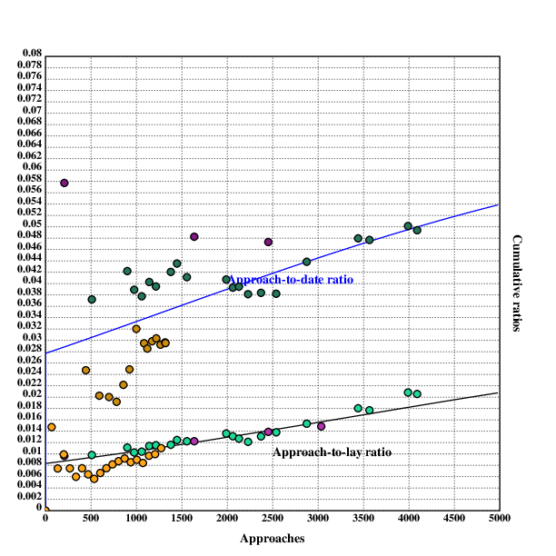
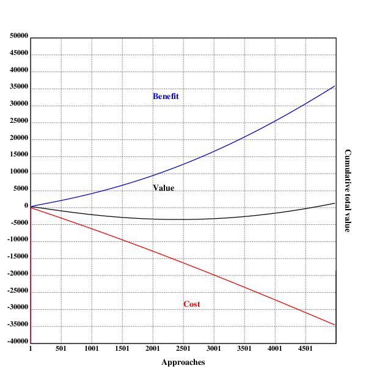
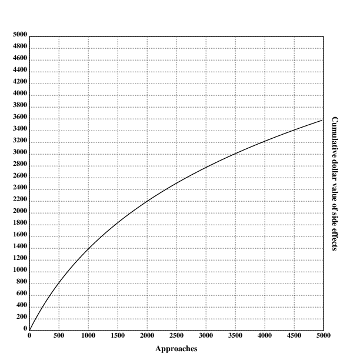

author: niplav, created: 2019-12-25, modified: 2024-07-05, language: english, status: in progress, importance: 3, confidence: possible
Is daygame worth it, and if yes, how much? I first present a simple point estimate cost-benefit value estimation written in Klong and find that daygame is probably worth ~\$996 maximum, at ~499 approaches, though the number varies strongly under different assumptions. After that, I modify the model to capture more of the nuance, and arrive at ~\$2098 of value for ~1000 approaches. I then perform a Monte-Carlo simulation to determine the uncertainty around the expected value and find that in the simple case the value of daygame ranges from -\$3297 to \$3200 (5th/95th percentile), with a median of \$899 and a mean of \$550, and in the complex case _.
These things should be left to the frigid and impersonal investigator, for they offer two equally tragic alternatives to the man of feeling and action: despair if he fail in his quest, and terrors unutterable and unimaginable if he succeed.
— Howard Phillips Lovecraft, “From Beyond”, 1934
Daygame is the art of meeting and attracting women during the daytime in different locations and at different times of the day.
— Sebastian Harris, “Daygame: A Quick Beginner’s Guide“, 2018
Many daygamers follow the London Daygame Model which is fairly linear and based on approaches that last 5-10 minutes each.
Is this method of daygame worth it, and if yes, how much should one be doing?
In this text, I first review existing texts on the topic and find them lacking in several ways. I then present a simple and general model for the value of doing a number of daygame approaches, and find that it recommends doing 484 approaches with a value of \$969 in the optimum. I then extend the model to more subjective and hard to measure factors such as positive side effects, effects of daygame on mood and similar other factors, and estimate that the optimal number of approaches is 1024 (power of two not indended, but appreciated), at a value of \$2110.
The models presented don't consider externalities, be they positive or negative. That is the subject of a different debate.
One already existing cost analysis of game is Free Northerner 2012, he focuses on nightgame in bars and clubs and concludes that
Cost for Sex [from prostitution]: \$300
Cost for sex [from game]: \$460 (\$200 is you enjoy clubbing, gaming, and dating for their own sake)
[…]
For casual sex, a mid-range prostitute is cheaper than game. On the other hand, most of game’s costs are in the form of time opportunity costs, so if you have a lot of free time and little money or you enjoy the activities of clubbing, game, or dating even without the promise of sex, then game might be a better deal. In addition, the higher your average wage, the more expensive game becomes relative to prostitution, as the opportunity costs of game increase the more potential earning you sacrifice. Conclusion: For obtaining casual sex, game is the better option if you are paid low wages and have free time or if you enjoy game and related activities. Prostitution is the better option if you are middle-class, don’t have the free time, or dislike engaging in game.
— Free Northerner, “Economic Analysis of Casual Sex – Prostitution vs Game”, 2012
(Inconsistent capitalization is in the original text)
However, his analysis doesn't take daygame into account (he mentions it at the end). Daygame seems to me to be a much better option (not just for people who don't like nightclubs): it's healthy due to moving around a lot outside, getting drunk is mostly not an option, it doesn't mess up the sleep schedule, one doesn't have to pay to get into clubs, and it can be combined with sightseeing in foreign cities.
He also doesn't consider positive side-effects from game (such as increased confidence), negative side-effects from prostitution (such as addiction), and diminishing returns in his analysis.
In daygame-lingo, the word "ratio" usually refers to the ratio between approaches and contact information (such as phone numbers)/dates/women slept with (colloquially "lays"). In this text, I'm interested in the approach-to-date ratio (here the ratio of first dates to approaches) and the approach-to-lay ratio.
30 approaches will get me between 10 - 15 phone numbers.
Half of these phone numbers will flake leaving me messaging around 5 - 8 girls.
I will get half of these girls out on dates (between 2 - 4) and sleep with 1 or 2.
These are realistic stats, this is cold approach, cold approach is tough.
— James Tusk, “Realistic Daygame Statistics (Daygame Tips)”, 2017
James Tusk is a very good looking daygame coach, so these numbers are quite high.
daygamersbible
2018
proclaims
16.9% numbers/approaches, 22.4% dates/numbers and 37.1% lays/dates
(that would be $0.169 \cdot 0.224=0.0378$ dates per approach, and
$0.169 \cdot 0.224*0.371=0.0140$ lays per approach).
Tom Torero presents his experiences with daygame ratios in this video (a). He claims that a beginner will on average get a lay out of a hundred approaches, an intermediate one out of fifty, and an advanced daygamer one lay out of thirty. He doesn't specify how much practice makes a beginner/intermediate/advanced daygamer.
The numbers for the approach-to-lay ratios were 1 in 100 for beginners, 1 in 50 for intermediate daygamers and 1 in 30 for experts.
Fortunately, some daygamers are often very diligent in keeping track records of their ratios and even publish them.
Here, I collect cumulative date and lay ratios from several blogs. I don't count idates as dates, because I'm not sure whether daygamers usually pay for them or not.
Note that these numbers are just stats some guys wrote on the internet, usual qualifiers about the accuracy of these values apply.
I am also not sure whether at some points "dates" was all dates combined, and later was split into "first date", "second date" etc. For simplicity I assume that in the beginning, "dates" simply referred to "first date". It still seems to be coherent.
Lay ratios:
rwlay::[[511 5][901 10][977 10][1060 11][1143 13][1216 14][1380 16][1448 18][1557 19][1990 27][2063 27][2130 27][2230 27][2373 31][2540 35][2876 44][3442 62][3567 63][3991 83][4092 84]]
rwlayrat::{(*x),%/|x}'rwlay
Date ratios:
rwdate::[[511 19][901 38][977 38][1060 40][1143 46][1216 48][1380 58][1448 63][1557 64][1990 81][2063 81][2130 84][2230 85][2373 91][2540 97][2876 126][3442 165][3567 170][3991 200][4092 202]]
rwdaterat::{(*x),%/|x}'rwdate
Seven (he says that "I started my daygame journey back in 2014", so there is information missing):
Lay ratios:
slay::[[38 3][176 4][238 5][318 8][344 9][367 11][434 12][478 13][543 13][588 14][663 15][691 15][752 17][774 18][853 20][942 20][1087 24]]
slayrat::{(*x),%/|x}'slay
Date ratios:
sdate::[[38 8][174 11][236 14][318 21][344 23][367 26][434 27][478 27][543 32][588 33][663 36][691 41][752 44][774 47][853 53][942 54][1087 76]]
sdaterat::{(*x),%/|x}'sdate
His numbers are quite high, and I'm not really sure why—perhaps a combination of only taking numbers from somebody experienced, combined with the fact that he does daygame in russia, which is supposedly easier than London, where most of the others publishing data do daygame.
Mr. White didn't publish statistics from the beginning (this data is from his 8th & 9th year of doing daygame), this information is therefore unfortunately incomplete:
Lay ratios:
mwlay::[[700 13][1212 25]]
mwlayrat::{(*x),%/|x}'mwlay
Date ratios:
mwdate::[[700 30][1212 68]]
mwdaterat::{(*x),%/|x}'mwdate
The 2019 review unfortunately doesn't contain the number of approaches, but he writes:
I got 11 lays this year and my approach to lay ratio was around 1:53 with roughly the same age and quality: an improvement on last year’s ratio.
— Thomas Crown, “2019 In Review”, 2020
From this one can deduce that the number of approaches was $11*53=583$,
or at least a number somewhere near that.
Lay ratios:
tclay::[[208 2][1638 20][2453 34][3036 45]]
tclayrat::{(*x),%/|x}'tclay
Date ratios (he talks about dates, but it's not clear what the number of first dates is. I'll still collect the data, but take with a grain of salt) (also, his 2019 review doesn't say anything about the number of dates, so that is omitted):
tcdate::[[208 12][1638 79][2453 116]]
tcdaterat::{(*x),%/|x}'tcdate
Krauser (who started sometime in 2009, I believe, so these numbers are after several years of training):
Most of these numbers rely upon estimates because I didn’t keep notes.
— Nick Krauser, “My 2013 Daygame Stats”, 2014
Lay ratios:
klay::[[1000 27][1480 50][2150 65]]
klayrat::{(*x),%/|x}'klay
Date ratios:
kdate::[[1000 60][1480 110][2150 160]]
kdaterat::{(*x),%/|x}'kdate
Lay ratios:
wlay::[[39 1][200 2][396 3][584 4][619 5][678 6][746 7][825 8][961 9][1086 9][1122 9][1174 10][1220 11][1267 11][1317 12][1322 12]]
wlayrat::{(+/(*+wlay)<x)%x}'1+!1000
Since the data for the first 1000 approaches is complete, we can create a dense array of ratios over time.
Date ratios:
wdate::[[445 11][593 12][700 14][783 15][858 19][925 23][1000 32][1086 32][1122 32][1174 35][1220 37][1267 37][1317 39][1322 39]]
wdaterat::{(*x),%/|x}'wdate
I will assume that this is comparatively over-optimistic,
and assume that the date-to-lay ratio converges towards 1 in
30 on the scale of thousands of approaches in the form of an
S-curve.
The other parameters are estimated using
scipy.optimize.curve_fit with data from Roy Walker,
Mr. Wolfe and Thomas Crown, since we have information from the start.
First we collect the relevant information in a processable form (removing
the first datapoint from Mr. Wolfe because it confuses curve_fit):
import numpy as np
import scipy.optimize as spo
rwlay=np.array([[511, 5],[901, 10],[977, 10],[1060, 11],[1143, 13],[1216, 14],[1380, 16],[1448, 18],[1557, 19],[1990, 27],[2063, 27],[2130, 27],[2230, 27],[2373, 31],[2540, 35],[2876, 44],[3442, 62],[3567, 63],[3991, 83],[4092, 84]])
tclay=np.array([[208, 2],[1638, 20],[2453, 34],[3036, 45]])
wlay=np.array([[39, 1],[200, 2],[396, 3],[584, 4],[619, 5],[678, 6],[746, 7],[825, 8],[961, 9],[1086, 9],[1122, 9],[1174, 10],[1220, 11],[1267, 11],[1317, 12],[1322, 12]])
def ratio_of(data):
return data.T[1]/data.T[0]
ratios=np.concatenate([ratio_of(rwlay), ratio_of(tclay), ratio_of(wlay)])
approaches=np.concatenate([rwlay.T[0], tclay.T[0], wlay.T[0]])
Now we can estimate the parameters:
def shrunk_logistic(x, slope, intercept, ceiling):
return ceiling*1/(1+np.exp(slope*x+intercept))
ratio_fit=spo.curve_fit(shrunk_logistic, approaches, ratios, bounds=([-np.inf, 0, 0], [1, np.inf, 0.033]))
These numbers are of course heavily dependant on all kinds of factors: attractiveness, speed of learning, effort exerted in daygame, logistics and much much more.
I then repeat the same procedure for dates, collecting the date ratio data for Walker, Wolfe & Crown:
rwdate=np.array([[511, 19,], [901, 38,], [977, 38,], [1060, 40,], [1143, 46,], [1216, 48,], [1380, 58,], [1448, 63,], [1557, 64,], [1990, 81,], [2063, 81,], [2130, 84,], [2230, 85,], [2373, 91,], [2540, 97,], [2876, 126,], [3442, 165,], [3567, 170,], [3991, 200,], [4092, 202]])
tcdate=np.array([[208, 12], [1638, 79], [2453, 116]])
wdate=np.array([[445, 11,], [593, 12,], [700, 14,], [783, 15,], [858, 19,], [925, 23,], [1000, 32,], [1086, 32,], [1122, 32,], [1174, 35,], [1220, 37,], [1267, 37,], [1317, 39,], [1322, 39,]])
date_ratios=np.concatenate([ratio_of(rwdate), ratio_of(tcdate), ratio_of(wdate)])
approaches=np.concatenate([rwdate.T[0], tcdate.T[0], wdate.T[0]])
This time I assume that at best one goes on a date with 1 in 14 women approached:
date_ratio_fit=spo.curve_fit(shrunk_logistic, approaches, date_ratios, bounds=([-np.inf, 0, 0], [1, np.inf, 0.07]))
date_slope, date_intercept, date_ceiling=date_ratio_fit[0]
The Klong code describing the date- and lay- ratios is then as follows:
layceil::0.032999999999999995
layslope::-0.00032469342601662376
layintercept::1.0921062524727312
layratio::{layceil*1%(1+exp(layintercept+layslope*x))}
dateceil::0.06999999999999999
dateslope::-0.00032682619283946467
dateintercept::0.4249112313623176
dateratio::{dateceil*1%(1+exp(dateintercept+dateslope*x))}
The plotted data for lay ratios (and the corresponding fitted sigmoid curve) look like this:
Similarly, the data for reported date ratios:
We can also compare date & lay ratios with the fitted parameters, and I notice that date ratios grow faster than lay ratios. Not sure what is up with that.

One can separately estimate the costs and the benefits from doing daygame, and then subtract the costs from the benefits to calculate the value.
Daygame has several different obvious costs: opportunity costs from the time spent approaching and dating women who then flake (one could be doing better things in the same time, like pursuing other hobbies, learning a language or musical instrument) and simply the cost of paying for dates.
First you'll need to desensitise yourself to randomly chatting up hot girls sober during the day. This takes a few months of going out 3-5 times a week and talking to 10 girls during each session (keep each session to no more than 2 hours).
— Tom Torero, “Beginner's Guide to Daygame” p. 6, 2018
Most regular hustlers go out 3-5 times a week and do 10 approaches each session, meaning 30-50 per week.
— Tom Torero, “Beginner's Guide to Daygame” p. 13, 2018
I will assume that most daygamers will do around 4 approaches an hour (less in the beginning, with approach anxiety, but more later), with 15 minutes for one approach.
The opportunity cost of daygame is unclear—what would one be doing instead? One could dream of daygamers instead cultivating friendships, learning languages or making music or meditating, and while that could certainly sometimes be the case, a lot of that time would also be spent on mindlessly browsing the internet, watching netflix or doing other things that aren't terribly fulfilling or valuable. Economists often assume that the opportunity cost of an activity to be the money one could have earned during that time, so I'll just go with that.
The Clearer Thinking tool for the value of my time returns 20€/hour:
oppcost::20
Daygamers who could earn more with their day job might want to adjust this number upwards.
I am skeptical that the opportunity cost should be ones wage: an additional hour spent working might be net negative, even with taking wage into account (working hours have diminishing and at some point negative marginal utility because of exhaustion).
It may be that daygame only replaces productive personal time, that the energy exerted in daygame misses in other productive activities, while the amount spent on downtime & unfulfilling stuff stays constant.
But such things are difficult to quantify, so I'll stick with the opportunity cost.
Dates cost money: both as an opportunity cost and for paying for drinks.
Free Northerner 2012 assumes 3 dates, it is common wisdom originating from Mystery that 7 hours is a normal time spent on dates until having sex.
Data from Roy Walker includes numbers of dates starting from 2018:
He reports 76 first dates, 27 second dates, 11 third dates and 5 fourth
dates. This means that he went on 5 dates with 4 women, on 3 dates with
$11-5=6$ women, and so forth. This means that the average number of dates he
went on per first date was
$\frac{5\cdot 4+(11-5)\cdot 3+(27-11)\cdot 2+(76-27)}{76} \approx 1.566$
– quite lower than the 3 assumed by Free Northerner
2012!
For Seven, the numbers can be found here:
He reports 76 first dates, 21 second dates, 13 third
dates, 6 fourth dates and 1 fifth date. This results in
$\frac{(1\cdot 5+(6-1)\cdot 4+(13-6)\cdot 3+(21-13)\cdot 2+(76-21))}{76} \approx 1.54$
dates per lay, again smaller.
Similarly, Thomas Crown reports 1.4 dates on average for a lay in his first year and 1.1 for his second.
I will assume 1.7 dates on average lasting 3.5h each, because the numbers above are from people who have already done many approaches:
datelen::3.5
avgdates::1.7
On dates, one usually needs to pay for drinks, food, and perhaps a taxi, there doesn't seem to be much information about the exact costs out there. I will assume \$20 for a date.
datecost::20
The cost of daygame is the sum of the opportunity cost from approaching, the opportunity cost of dates and the direct cost of paying for dates:
cost::{(oppcost*x%apprperhour)+(dateratio(x)*datecost*avgdates*x)+dateratio(x)*datelen*avgdates*oppcost}
The resulting function is linear on the number of approaches:
.l("./load.kg")
.l("nplot")
grid([0],maxappr,[1000];[-12000 0 500])
xtitle("Approaches")
ytitle("Cumulative dollar cost of dates")
plot(cost)
draw()

The thing providing most of the value from daygame is the sex with different women. Sex is not a homogenous commodity, but instead has a wildly differing value, depending on the attractiveness of the partner and their skill at sex. Nethertheless I will assume that the value of sex averages out to the price of prostitution.
I will consider two different components of the value: the value of the sex itself (as compared to prostitution) and the sense of pride and accomplishment (knowing that one is developing ones skills in daygame, while prostitution is often accompanied with shame).
According to this intro to escorting guide on a business blog for escorts (I guess escorts need business advice too; the weird things you find on the internet) costs about $250-500/hr depending on the city.
— Free Northerner, “Economic Analysis of Casual Sex – Prostitution vs Game”, 2012
This leaves us with ~\$400 per hour of prostitution, but I want to flag that the cost of prostitution is highly dependent on the attractiveness of the escort, with prices in the thousands of dollars for particularly beautiful women—but realistically I don't expect to find data on the beauty of women that men sleep with through daygame compared to the beauty of escorts.
I will assume that one sex session lasts one hour and that the average daygamer sleeps with the same woman 4 times (some women become regulars or long-term partners, even if the overwhelming majority is only a one-night stand).
And I will assume that the diminishing returns on sex with the same partner is logarithmic, because for men, having sex multiple times with the same woman carries little evolutionary advantage except perhaps for competition with other mens sperm.
So we can calculate that the value of sleeping with one woman is
.l("math")
350*log(2;4)
700.0
I will also assume that the dimimishing returns on sex with different
partners are radical,
with an exponent of $\frac{199}{200}$.
I have not found any people discussing this and other questions, and there is probably a high variance in these numbers depending on the daygamer.
My intuition is that it should be linear, which stems from the handwavey evolutionary argument that men should value additional offspring with randomly selected women with a constant marginal return, since more diverse offspring from a basically infinite population of mating partners result (in expectation) in linearly more grandchildren.
If I assume it's linear, then the model just straight up gives astronomical values for doing daygame. Like, it's no question at all whether one should do daygame, and one should basically never stop doing it.
If you believe that there are linear returns to the number of sex partners, then you want to do daygame, unless you value sex very little.
But, in practice, many men doing pick-up lose the motivation after some number of lays, their notch hyena satisfied, so there must be some diminishing returns here. But logarithmic returns are quite punishing, and don't seem to capture the underlying dynamic very well—hence the compromise with radical diminishing returns with a "large" (i.e. very slowly diminishing) exponent. That way, it's not as crazy as non-diminishing returns, but still captures some of the real-world dynamics and theoretical intuitions.
partnerexp::199%200
I will assume that the sense of pride and accomplishment is ~\$400 for the first lay. I am making this number up, since I'm lacking any data on this. (If one believes this to be too much, I'll remind the reader that men sometimes pay thousands of dollars for pick-up coaching and bootcamps, which very far from guarantee any sex.)
To wrap it up, one can conclude that the value of the first lay is
prostcost::350
prideval::400
laynum::4
firstlayval::prideval+prostcost*log(2;laynum)
1000.0
As said, I assume that the marginal returns on additional sex partners are radical—except for the sense of pride and accomplishment, which very much disappears over time. I'll assume it's logarithmic.
The benefit from sex can be calculated by summing the expected sense of
pride and accomplishment and the expected value from having sex. Note
that this number is cumulative, as it considers the benefit of all lays
up for x approaches:
firstlayat::118
pridevals::{prideval*log(2;x+1)*layratio(x)*x}
pridemult::prideval%log(2;pridevals(firstlayat)) :"For normalization, so that the first lay is actually worth as much"
discpridevals::{pridemult*log(2;pridevals(x))}
layvals::{prostcost*log(2;laynum)*layratio(x)*x}
laymult::prostcost%layvals(firstlayat)^partnerexp :"same here"
disclayvals::{(laymult*layvals(x))^partnerexp}
This looks like this for up to 5000 approaches:
.l("./load.kg")
.l("nplot")
grid([0],maxappr,[1000];[0 50000 2000])
xtitle("Approaches")
ytitle("Cumulative dollar value of lays")
plot(layvals)
draw()

Then the total benefit is the discounted pride values and the discounted value of sex:
benefit::{discpridevals(x)+disclayvals(x)}
To now calculate the optimal amount of daygame, one simply calculates the difference between cumulative benefit and cumulative cost for all possible number of approaches up to the maximum possible number (in this case 5000, which is a common number for expert daygamers) and chooses the maximum:
maxappr::5000
vals::{benefit(x)-cost(x)}'1+!maxappr
optim::*>vals
4999
optimben::vals@*>vals
10190.4271226371274
So one can conclude that 5000 approaches (i.e., as many as possible) are optimal under these assumptions, with a value of \$10k.
This can be visualized as well:
.l("nplot")
.l("./res.kg")
grid([0],maxappr,[1000];[-15000 15000 1000])
xtitle("Approaches")
ytitle("Cumulative total value")
plot({benefit(x)-cost(x)})
text(200;250;"Value")
setrgb(0;0;1)
plot(benefit)
text(200;400;"Benefit")
setrgb(1;0;0)
plot({-cost(x)})
text(250;60;"cost")
bar(optim;15000+optimben;10000)
draw()

Of course one might answer that the simple model fails to capture much of the subtlety of the situation: Proponents of daygame might mention positive psychological side-effects such as increased self-confidence and resilience to rejection. Opponents of daygame could point at direct financial expenditures (such as possibly having to buy new clothes, renting an apartment that is closer to good places for daygame), and also possible social and psychological costs (scars from constant rejection and mockery from being found out to be a pick-up "artist"), if they ever stopped moaning about how they disapprove of daygame.
These influences are of course much harder to quantify, and the numbers presented here are mostly guesswork. As I get to know more daygamers and do more daygame myself, I intend to update and refine this model to better reflect reality.
Note that this slightly more complex model adds to the previous, simpler model. Previously assumed costs and benefits are not altered.
Besides sex, the additional benefits of daygame can be separated into two broad categories: Increases in subjective well-being (from cultivating a skill that requires effort and practice), and positive side effects such as increased salary resulting from a higher willingness to negotiate ones salary and search for other jobs.
Let's assume one does 1000 daygame approaches per year. Let's then assume that doing 1000 daygame approaches increases ones expected salary by 0.5% in the first year, with then logarithmic increases for each additional year, for 10 years. The parity purchasing power average annual wage in the US was \$60k in 2017, but many industrialized countries are lower. I'll assume that the average annual wage for a daygamer is \$40k, just to be safe.
The code for calculating the monetary value of the positive side-effects of doing x daygame approaches then is
annsal::40000
yearsben::10
increase::0.005
apppy::1000
sideeff::{yearsben*increase*annsal*ln(1+x%apppy)}

This one is tricky, especially for somebody who has never done any daygame approaches. Many daygamers seem to highly enjoy what they do, but that is probably mostly due to selection bias. I'll mostly rely on my personal experience and on this very biased sample set here, so take this with a grain of salt. That said, I haven't read any reports describing that the author stopped doing daygame due to stress or uncontrollable anxiety, although people who would do that would probably never start doing daygame in the first place.
To get to the point, I model the mental effects of daygame to be negative in the beginning (increased anxiety, self-doubt, and insecurity), and positive effects such as playful enjoyment, flow-states and extraverted enthusiasm setting after in after an initial hump. These positive states become less strong over time because of getting used to pickup. Specifically, the negative effects peak at ~80 approaches (with -\$500), and break even after ~300. The cumulative value approaches \$1900 over thousands of approaches.
To model this, I abuse a log-normal distribution to represent the value over time:
mental::{(10000*(ln.pdf((x*0.005)+0.5;1;1)))-1900}

Besides the cost for dates & opportunity costs, doing daygame might carry a great amount of various expenditures: some daygamers move to appartments that are closer to the centers of cities & are more expensive, there may be some costs from upgrading ones wardrobe, buying condoms and possibly sex toys.
In economics, costs are often divided into fixed costs (costs that are not dependent on the amount of goods produced, in this case approaches made) and variable costs (costs that are related to the amount of goods produced).
Making the distinction between fixed costs and variable costs is sometimes a bit tricky; similar in this case. Is buying new clothes a fixed or a variable cost? Clothes wear down over time, and need to be bought again, but the difference doing daygame makes in wearing down clothes is minor at best. Also, some costs will depend on the time in ones life doing daygame, but not on the amount of daygame: Doing daygame for 10 years, but only with 100 approaches a year, will have different fixed costs from doing it for a year, but 1000 approaches in that year. In making the distinction between what counts as a fixed cost in this case and what counts as a variable cost, I will mostly go with my gut feeling.
Note that it is also important to consider the counterfactual case: Would these expenditures be made if the person wasn't doing daygame?
I assume that the fixed costs for doing any daygame at all are \$500:
fixcost::500
I assume that the variable costs are \$0.5 per approach:
varcost::0.5
With this, one can easily calculate the additional exppenditures:
expenditures::{fixcost+varcost*x}
For some people doing daygame, being found out as a daygamer can have negative consequences: Loosing friends, being publicly shamed, or even having negative effects in the workplace. For this reason (and probably also as a precautionary measure), many daygamers publish their writing online anonymously.
But doing daygame can also have negative side-effects even if one doesn't write about it online: Acquantainces could see one doing daygame and tell it around in parts of ones social circle, leading to ostracisation or financial consequences.
On the other hand, being discovered probably doesn't propagate through ones whole social circle, and often probably has very small effects.
I model this as having a certain probability of being discovered as a daygamer for every approach. Being found out more than once has logarithmically increasing costs with the number of being found out.
I'll (somewhat arbitrarily) set the cost of first being found at \$500, and the probability of being found out at any approach to 0.1%.
The probability of being discovered n times with
x approaches can be calculated using the binomial
distribution.
To make the code run faster, only the scenarios with a cost of more than \$0.01 are being considered.
fcbfo::300
pbfo::0.001
cbfo::{[t];t::x;+/{b.pmf(x;t;pbfo)*fcbfo*ln(e*x)}'1+!{(x<t)&00.1<b.pmf(x;t;pbfo)*fcbfo*ln(e*x)}{x+1}:~1}
The global optimum is now calculated the same way as here:
optim::*>vals
1024
vals@*>vals
2110.1350422531768
The more complex model with additional considerations therefore recommends 1024 approaches, with a value of ~\$2110.13.
Graphically:
.l("nplot")
.l("./res_complex.kg")
grid([0],maxappr,[1000];[-20000 20000 1000])
xtitle("Approaches")
ytitle("Cumulative total value")
plot({benefit(x)-cost(x)})
text(200;250;"Value")
setrgb(0;0;1)
plot(benefit)
text(200;400;"Benefit")
setrgb(1;0;0)
plot({-cost(x)})
text(250;60;"cost")
bar(optim;20000+optimben;10000)
draw()

I have presented both a simple and a more complicated cost-benefit analysis for daygame. Both conclude that daygame is worth it, at around 500-1000 approaches, but the value is not enormous, with only a \$1-2k, and decreases rapidly with less lenient assumptions.
I tentatively conclude that daygame may be worth it, but it's definitely not a surefire positive deal. Sign up for cryonics first.
Since there is a lot of uncertainty in the presented model, I thought it'd be good to make a Monte-Carlo version of the model using the website Guesstimate.
The model can be found here.
A cost-benefit analysis of daygame contains some questions that are not obvious to answer, but some of which feel tractable from a population-genetics perspective: